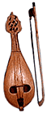
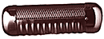
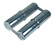
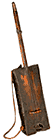
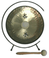
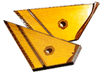

Gadulka (Гудулка): Болгарский народный струнный смычковый инструмент, разновидность вертикальной скрипки. На корпусе грушевидной формы с продолговатым отверстием-резонатором 3-4 игровые и 9-10 бурдонных струн.Играют ногтями пальцев, что придает звуку флажолетный тембр.
Gaval: 1. Азербайджанский тамбурин - см. дойра
2.(Далдама, кили, дачу) Двухголовый барабан, входящий в состав инструментального ансамбля южного Дагестана (gaval и две зурны). Звук извлекают руками или колотушками.
Goje (goge): Западно-африканская (Гана, Нигерия) однострунная скрипка. На gourd-резонатор натянута кожа змеи, струна из конского волоса. Звук извлекают лукообразным смычком.
Gourd: этот африканский овощ имеет древнюю историю, идущую с библейских времен, однако и до сих пор широко используется в повседневной жизни многих африканских стран. Растет на лозе как у тыквы, тем не менее нес'едобен в свежем виде. Обладает кислым горьким вкусом. После созревания с gourd происходит удивительное превращение: он высыхает естественным образом, превращаясь в твердую оболочку с единственным семенем, остающимся внутри.
Gourds уникально разносторонняя культура. Помимо основного использования для изготовления сосудов для переноски и хранения воды, кубков и чашек, из них также делают корпуса музыкальных инструментов, плавательные средства, буи, амулеты и подарки.
Иногда термин используют как общее название для полых внутри резонаторов растительного происхождения.
Guiro:

Зубчатый резонатор, который скребут палкой или используют как шейкер для извлечения звука. Бывают инструменты с двумя рабочими поверхностями разной формы. Guiro распространен на Кубе, в Пуэрто-Рико и Перу, а также на Карибах. Иногда инструмент украшают сложными орнаментами и придают ему скульптурную форму.
Ganza: Бразильский шейкер в виде одинарной или сдвоенной трубки, обычно сделанный из металла и наполненный мелкими камешками или дробью. Игра на инструменте кажется простой, но требует от исполнителя много силы и выносливости и захватывает тело целиком.
Gimbri: Общая северо-африканская лютня района ниже Сахары. Обычно состоит из скругленного, безладового грифа, над котором расположены одна-три струны из овечьих кишок. Настройка осуществляется не посредством колков, а перемещаемыми кожаными ладами. Прямоугольный звуковой бокс с кожаным покрытием часто используется как барабан.Музыканты марокканского братства Gnawa для особого жужжащего эффекта добавляют звенящие кусочки металла наверху грифа.

Gong: Самозвучащий ударный музыкальный инструмент. Широко распространен в странах Азии. Звук из свободно висящего гонга извлекается ударами колотушки. Высота и характер звука меняется в зависимости от места удара.В Европе гонг имеет форму вогнутого диска из кованой или литой бронзы (реже латуни). Одна из наиболее популярных разновидностей гонга - тамтам.
Guira: Металлический скребок, используемый в merengue.

Гусли: Древнерусский струнный щипковый инструмент, первые сведения о котором относятся к VI веку. Ранний тип - гусли звончатые - представлял небольшой деревянный плоский ящик трапецеидальной формы с несколькими жильными струнами. Корпус изготавливался из сосны или ели, а покрывался сверху декой из явора (с чем связано название - гусли яровчатые). Число параллельно натянутых струн колебалось от 5 до 25.Под влиянием западных инструментов позднее появились две разновидности гуслей - щипковые и клавишные.